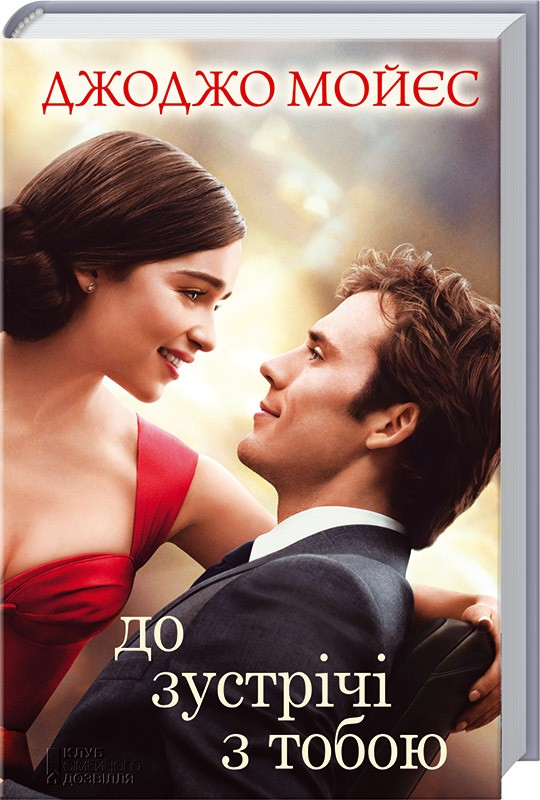
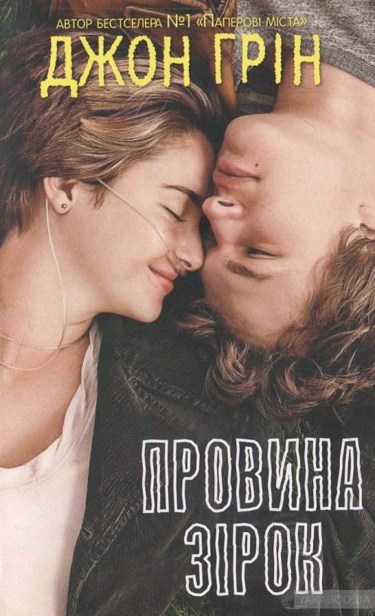
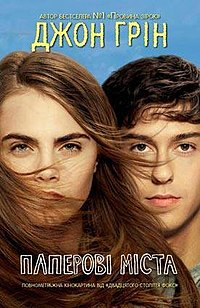

За п'ять кроків до кохання
П’ять кроків і в жодному разі не ближче. Інакше це може вбити Стеллу.
Чому? Рідкісна хвороба, яка з дитинства не давала жити нормальним життям. Не наближайся,
не варто. Незабаром на неї чекає операція, і нарешті все буде добре. Та все одно тримай
дистанцію. Коли тобі хочеться обійняти її чи торкнутися волосся — не наближайся до неї,
Вілле. Ти саме той, кого вона мусить уникати попри все. Навіть один твій подих може
зруйнувати все її життя. Якщо ти хочеш, щоб вона жила, — тримайся на відстані. Але я
знаю, ти не можеш. Чому саме ти закохався в неї? Чому вона покохала саме тебе? Разом —
не можна. Окремо 1 неможливо…
До зустрічі з тобою

Зворушлива історія про кохання наперекір усім перешкодам. Луїзі подобалося
працювати в маленькій кав’ярні. Вона розуміла, що не закохана у свого хлопця. Але дівчина
й уявити не могла, що зустріч із чоловіком, прикутим до інвалідного візка, змінить її життя…
Вілл розумів, що після жахливої аварії він не зможе жити на повну силу і хотів припинити це
беззмістовне існування. Він не здогадувався, що за кілька хвилин у його життя увірвуться
радість і кохання, ім’я яким – Лу…
Провина зірок

Героїня роману, 16-річна Хейзел, зосереджена на хворобі, що викликає у дівчини
депресію. А потім несподівано у її життя вривається Огастус із зовсім іншим поглядом на проблему.
Юнак, незважаючи на важке захворювання, продовжує насолоджуватися радощами буття, прагнучи відчути
якомога більше. Цією невгамовною жагою до життя Огастус «заражає» Хейзел. Молоді люди з головою
занурюються у любов, цінуючи кожну мить, проведену разом. Вони кохають, ненавидять, ревнують,
обурюються. І це змушує забути про навислу над ними смерть.
Паперові міста

У кожного в житті є люди, які мають для нас величезне значення. Це можуть бути
батьки, друзі, кохані або навіть сусіди. Якщо однієї ночі така людина залізе до вас у вікно
та попросить про допомогу, навряд ви їй відмовите. От і Квентин не зміг. І поїхав разом зі
своєю сусідкою Марго, в яку закоханий із самого дитинства, щоб помститися її кривдникам. Після
неймовірної ночі, сповненої пригод та азарту, він сподівається на розвиток їхніх із Марго відносин
проте вранці дізнається, що дівчина таємничо зникла. Не гаючи часу, Квентин відправляється на пошуки
Марго, слідуючи залишеним нею підказкам.